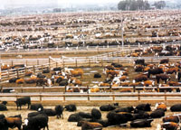

It's hard to say whether an American hamburger was appreciably less safe to eat the day after a Holstein cow tested positive for bovine spongiform encephalopathy (BSE) in Washington state last December than it was the day before, but it had sure gotten less appetizing. The news cracked open a door on the industrial kitchen where America's meat is prepared, and what we glimpsed on the other side was enough to send even the heartiest diner to the vegetarian entree or the fish special.
We learned, for example, that the beef we have been eating (until the USDA's sudden change of heart about the practice) might consist in whole or part of meat from a "downer cow," an animal so sick and hobbled that it must be dragged to the slaughterhouse with chains or pushed by a front-end loader. Then, before finding its way into a frankfurter, the carcass of that animal is often subjected to an "Advanced Meat Recovery System" that is so efficient at stripping flesh from spinal cords that the chances are good (35 percent, in one study) that the resultant frankfurter contains "central nervous system tissue" - precisely the tissue most likely to contain the infectious prions thought to communicate BSE.
So: We have been eating downers and really picking their bones clean. And what did these animals eat in turn? Many of us were surprised to learn that despite the FDA's 1997 ban on feeding cattle cattle meat and bone meal, feedlots continue to rear these herbivores as cannibals. When young, they routinely receive "milk replacer" made from bovine blood; later, their daily ration is apt to contain rendered cattle fat as well as feed made from ground-up pigs and chickens-pigs and chickens that may themselves have grown up on a diet of ground-up cows. But the grossest feedlot dish we read about in our newspapers over breakfast has to be "chicken litter," the nasty stuff shoveled out of chicken houses-bedding, feathers and overlooked chicken feed. Since this chicken feed may contain the same bovine meat and bone meal that FDA rules prohibit in cattle feed, those rules are, in effect, all but guaranteed to break themselves. Oh, yes, I forgot to mention one of the ingredients in chicken litter: chicken feces, which the U.S. cattle industry regards as a source of protein.
Whatever else it is-nutritious, economical, the polar opposite of wasteful-you can't help feeling that the convoluted new food chain that industrial agriculture has devised for the animals we eat (and thus for us) is, to be unscientific for a moment, disgusting.
I know, I'm offering an aesthetic judgment of a system designed not for beauty but for efficiency. Protein is protein, goes the logic of this system, whether you find it in an animal muscle, a soybean or a chicken dropping: This reductionism is the world-beating formula that drives industrial agriculture, and it works, up to a point. By feeding the absolute cheapest forms of energy and protein to animals it treats as machines, the industrial food chain has succeeded in making the protein we eat unimaginably cheap. Just look at what you can get for a buck or two at Wal-Mart or McDonald's.
But there is a problem. By the reductive logic that rules our food system, cannibalism should be as legitimate a way of eating as any other: It's all just protein, right? Yet the great unlearned lesson of BSE and other similar brain-wasting diseases is that, at the level of species or ecosystems, it isn't quite true that protein is protein. Eating the protein of your own species, for example, carries special risks. The Fore people of New Guinea were nearly wiped out by kuru, a disease which bears a striking resemblance to BSE; they spread it among themselves by ritually eating the brains of their dead kin.
Biologists think that evolution probably selected against cannibalism as a way to avoid such infections (among other things). Many animals' instinctive aversion to their own feces and to the carcasses of their species may represent similar strategies to avoid infectious microbes and parasites. Through natural selection, animals have developed what amounts to a set of hygiene rules that function much like taboos. One of the most off-putting things about factory farms is how cavalierly they flout these evolutionary rules, forcing animals to overcome deeply ingrained aversions. For their instincts we substitute antibiotics.
Life as a human omnivore is more complicated and risky. When you can eat almost anything, how do you avoid the dangers nature presents, the plant toxins and parasites and lethal microbes? We have culture to guide us (traditions, science, Jane Brody), but surely even we can still hear older voices, aversions (to rot) and attractions (to sweetness) that still speak when we encounter a plate of food. In matters as fundamental to our animal lives as choosing what to eat, perhaps our aesthetic sense of things is not just aesthetic but is informed by something deeper, something we would do well to heed.
For tens of thousands of years, we have been eating the flesh of ruminants that live on grass. The rightness of that picture-a bovine grazing on grassland-goes way back, maybe all the way to the savanna. And while that picture has recently been eclipsed by nauseating images of modern meat production, the grass-fed ruminant and the vegetarian herbivore are not extinct yet.
For several years now, an alternative, postindustrial food chain has been taking shape, its growth fueled by one "food scare" after another: Alar, GMOs, rBGH, E. coli 0157:H7; now BSE. Whatever science told us about the risks of these novel industrial entrees and sides, something else told us we might want to order something more appetizing: organic, hormone-free, grass-finished. It might cost more, but it's possible again to eat meat from a short, legible food chain consisting of little more than sunlight, grass and ruminants. Back to the future: a 21st-century savanna. If, as seems probable, this landscape should now expand at the expense of the feedlot, then something good-even beautiful-will have come of this poor mad cow.
Michael Pollan is a contributing writer for The NewYork Times Magazine. This piece originally was published in The NewYork Times Magazine in the United States. Copyright 2004 Michael Pollan.
Mother Earth News
|
 USDA Photo |
|
|